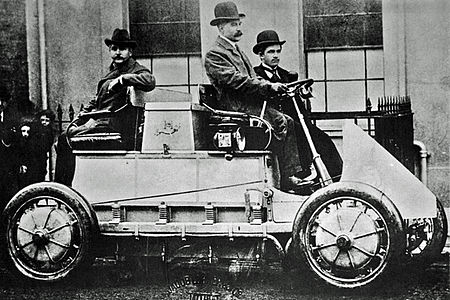
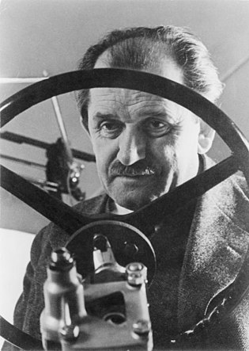

Біографія
Ранні роки
Фердинанд Порше народився 3 вересня 1875 року в маленькому містечку Мафферсдорф (тепер Вратиславіце, Чехія) в сім'ї судетських німців. Батько — Антон Порше, був власником автомобільної майстерні. Вмілий бляхар, він користувався повагою серед місцевих жителів і навіть обирався мером містечка. У Фердинанда також був старші брат і сестра. Антон Порше збирався зробити своїм спадкоємцем старшого сина, проте той загинув під час нещасного випадку, під час роботи в майстерні. Після цього спадкоємцем став Фердинанд.
В майстерні у батька хлопець почав працювати з 15 років. В той час у нього не було сумнівів щодо того, що він піде по стопах батька. Проте невдовзі його інтереси змінились, і він вирішив вступати в технічне училище. Зранку він працював в майстерні, а ввечері йшов в училище в сусіднє містечко Райхенберг (тепер Ліберец, Чехія).
Автомобільний конструктор
В 1898 році у Порше з'являється революційна ідея автомобіля з електроприводом. Він почав працювати над своїм проектом і невдовзі випустив дослідний зразок, який вийшов вдалим. Машина була компактною і швидкою — вона могла пересуватись з непоганою на той час швидкістю в 40 км/год, але при цьому — важкою. Значну частину ваги машини складали свинцеві акумуляторні батареї. Їх запас був невеликий — від однієї зарядки автомобіль міг їхати приблизно годину. Представивши свій автомобіль Лонеру він стає головним конструктором фірми «Lohner» і починає розробку більш перспективного автомобіля. Невдовзі такий був створений. Він отримав назву Lohner-Porsche, мав два електродвигуни потужністю 2, 5 к. с. кожен. Механічна трасмісія була відсутня, а електродвигуни розташовувались в невеликих маточинах передніх коліс — це був перший передньопривідний електромобіль. Крім того, машина не була цілком електричною — в ній був присутній бензиновий двигун, який повертав генератор. Генератор виробляв струм, який підживлювали акумулятори. Ті в свою чергу живили електродвигуни. Таким чином це була перша демонстрація гібридної силової установки, яка складалася з двигуна внутрішнього згорання, акумуляторів та електродвигунів. Ця розробка отримала Гран-прі Паризької всесвітньої виставки 1900 року. Лонер вважав цей зразок дуже вдалим, і залюбки їздив на ньому містом, проте Порше вважав проект незакінченим.
1906 року Порше став технічним директором і головним конструктором віденської фірми, яка виробляла автомобілі Austro-Daimler. Під його керівництво створюються моделі Prinz-Heinrich, Sascha, ADM і ADR. За розробку військової техніки (машин з гібридними силовими установками, моторів для дирижаблів і літаків) в роки Першої світової війни Порше, який не мав вищої освіти, був удостоєний звання заслуженого професора Віденського технічного університету і отримав від кайзера хрест «За заслуги».
У 1923 році Фердинанд зайняв посаду головного інженера штутгартської компанії Daimler-Benz AG, де очолив розробку гоночного автомобіля з двохлітровим двигуном. Найзнаменитішим Mercedes, створеними під керівництвом Порше стали спортивні S і SS.
В 1930-х роках Фердинанд Порше був запрошений до СРСР і побував на танкових і авіаційних заводах. Йому було запропоновано переїхати в СРСР разом з усім своїм конструкторським бюро для роботи в сфері розробки танків, літаків й автомобілів. Проте він відмовився. Пізніше, в часи Другої світової війни, німецька розвідка вимагала від Порше дані про військову промисловість СРСР: обладнання, технології тощо.
6 березня 1931 року в Штутгарті відкрилось конструкторське бюро Porsche, яке зайнялося розробкою двигунів усіх типів, а також автомобілів і мотоциклів.
Невдовзі на замовлення фірми Zundapp були побудовані три екземпляри Volksauto, який став прообразом відомого «Жука» (нім. Käfer). Історики вважають, що аби тоді він розробив тільки цю модель автомобіля, то його ім'я все одно увійшло б у світову історію автомобілебудування.
Друга світова війна
За часи війни конструкторське бюро Porsche створило всюдиходи на основі «Жука» і бойові машини: важкі танки PzKpfw VI Tiger (P) і «Королівський тигр», протитанкову САУ Ferdinand та надважкий танк Maus.
 Наприкінці 1943 року, під час бомбардування союзної авіації був знищений весь архів бюро Порше. На початку наступного року вціліле обладнання та документи були перевезені в маленьке австрійське містечко Гмюнд і розміщені в будівлі лісопилки. Тут Фердинанд та його 36-літній син Фердинанд Антон Ернст (Феррі) зустріли закінчення війни.Повоєнний період
В грудні 1945 року батька і сина заарештували по справі, яке вело французьке міністерство юстиції. Фердинанд перебував в ув'язненні протягом майже 20 місяців (Феррі випустили в березні 1946 року). Лише 1 серпня 1947 року з професора зняли звинувачення, щоправда, взявши підписку про невиїзд протягом року з французької зони окупації. Фердинанд відійшов від справ в бюро і обмежився консультуванням свого сина і його помічників.
Після звільнення Австрії її уряд наклав арешт на все німецьке майно і банківські рахунки, в тому числі — на капітал фірми Фердинанда. Потрібно було швидко шукати спонсорів, якими стали керівники цюрихського рекламного агентства фон Ценгер і Бланк.
Повернення бюро в Німеччину відбулося наприкінці 1949 року. 30 січня 1951 року Фердинанд Порше помер від інсульту. Фірма перейшла його сину Феррі.
Нагороди
- Почесний доктор Вищої технічної школи Відня (1917)
- Офіцерський хрест ордена Франца Йосифа (Австро-Угорщина)
- Почесний доктор Вищої технічної школи Штутгарта (1924)
- Медаль Вільгельма Екснера (1936)
- Німецька національна премія за мистецтво і науку (1938)
- Почесна стрічка студенстського братства Бруна-Судетія-Відень (1938)
- Почесний професор Вищої технічної школи Штутгарта (1924)
- Хрест Воєнних заслуг 2-го і 1-го (1942) класу
- Почесний знак «Піонер праці» (1 травня 1942)
- Кільце «Мертва голова» (березень 1944)